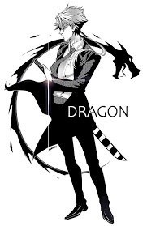

Como este membro ajudou nos desafios:
desafio 0


desafio 1


desafio 2


Dados para contato
Que tal me enviar um e-mail
|  |
Arthur SoaresOlá companheiro, Eu sou Arthur Soares dos Santos, tenho 16 anos e sou da Turma 2A. Eu sou estudante, sou amante de jogos digitais, e estou cursando Design Gráfico, Animação Digital e Modelagem 3D, e também sou Poeta. Eu amo interação social, sou um homem bastante criativo e quero transforma isso na minha profissão, aprender des da Raiz ate os frutos mais doces. A minha comida preferida sem duvidas é strangonoff, acompanhado de um bom suco de maracujá ou um Guaraná. Minhas profissões em mentes são: Design Gráfico, Diretor ou Dramaturgo, e ate mesmo pode fazer livros e tudo mais. |
A minha Historia é simples mas bem estranha. Eu cresci sem a presença do meu pai des de pequeno, e minha mãe foi uma mulher que passou a vida trabalhando para sustentar eu e ela. Eu era cuidado pela minha vó, meu vô, e a minha tia que eu considero também a minha mãe. Na minha vida, sempre fui um menino das ruas, fazia diversas brincadeiras de crianças humildes como jogar bola, bola de gude, pipa, peão, o tipico policia e ladrão e muito mais. Com o tempo tive diversas duvidas sobre a vida, Passei anos e anos quando tinha uns 10 anos pesquisando sobre os assuntos e com tempo descobri um dos meu maiores dons, a poesia. Logo no meio da história tive problema psicológicos que me fizeram eu me apaixonar com toda as forças pelo games que foram os meus anti depressivos na época. Logo o tempo foi passando, eu fiquei ruim na escola, e decidi mudar sobre e procurei ajuda. Com o tempo que melhorei e desenvolvi minha habilidade de fala, entrando no ramo da narração amadora de jogos, comecei a fazer stream, e entrei dentro do ramo Design e criação de arte digital. Logo o Cemic foi umas da s minhas ideia para aprimorar meu conhecimento dentro da computação. O grupo Peaky Info, foi uma oportunidade de eu me aprofundar dentro da materia de TI e dentro do grupos possuo amigos mais próximos e tudo mais.
| Telefone | +55 61 99621-5360 | |
| @poetisando_algo e @darth_soa | ||
| arthursoaresdossantos@gmail.com | Que tal me enviar um e-mail |